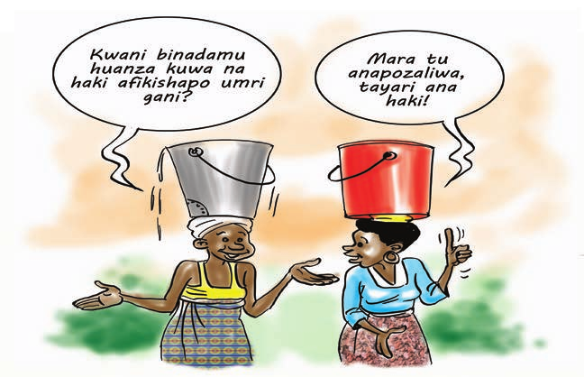

Kujenga uwezo wa washiriki juu ya dhana ya haki za binadamu na ulinzi wa haki za binadamu
Baada ya kumalizika mada hii, washiriki watafahamu;
Mwezeshaji anaweza kutumia mbinu zifuatazo katika kufafanua maana ya haki za binadamu:
Mwezeshaji tumia mbinu ifuatayo katika kufafanua maana ya haki za binadamu.
Mwezeshaji onesha mambo muhimu katika mjadala, toa mchango wako kulingana na maoni ya washiriki. Sisitiza kwamba binadamu ni kiumbe mwenye akili, busara na utashi (yaani ana uwezo na hiari ya kuchagua mema na mabaya) na sifa hizo ndizo zinachangia utu wake – kutimia kwa utu wa binadamu ambao ndio thamani au kipimo cha ubinadamu wenyewe.
Elezea kuwa kuna vitu vya asili ambavyo binadamu ni lazima awe navyo ili aweze kufaidi UTU wake kama binadamu. Kila mtu ana STAHILI za msingi- kiraia, kisiasa, kiuchumi na kiutamaduni.
STAHILI hizi za binadamu ndio zinafanya haki za binadamu – kila mtu ana haki za msingi – kiraia, kisiasa, kiuchumi na kiutamaduni.
Kutokana na kutambulika kwa stahili za binadamu, ndio maana kuna sheria zinazolinda haki za binadamu na kuheshimu utu wao. Kwamba kila mtu ni lazima akubali haki hizo ili kulinda utu wa binadamu.
Mwezeshaji toa mchango wako kuhusu maana ya haki za binadamu na sifa za haki za binadamu.
Mwezeshaji endeleza mjadala kwa kutoa mchango wako kuhusu maana ya haki za binadamu kwamba chimbuko lake ni UTU wa binadamu.
Haki za binadamu ni zile stahili ambazo kila mwanadamu anazo au anastahili kuwa nazo kwa kuwa tu yeye ni binadamu. Haki za binadamu ni haki ambazo hazibagui mtu wa aina yeyote, na bila haki hizo mtu hawezi kuwa binadamu kamili.
Haki za binadamu ni za asili, binadamu huzaliwa nazo na hivyo inabidi zitambuliwe na kuheshimiwa. Hazitolewi kwa kutegemea hati yeyote ya kisheria kwa kuwa binadamu huzaliwa nazo. Ikiwa stahili hizo zitaondoshwa au kukiukwa, basi utu wa binadamu huyo unakuwa umedhalilishwa au kutwezwa.
Haki za binadamu zipo tangu binadamu alipoanza kuishi katika dunia hii. Ni haki ambazo asili yake haiwezi kutenganishwa na kukua kwa binadamu na ushiriki wake katika kukabiliana na changamoto kadhaa za kimazingira, kimila, kiutamaduni, kisiasa na kiuchumi. Hivyo, kwa kifupi, haki za binadamu zinajumuisha haki za msingi kama vile kuishi, kujieleza, kwenda mahali unapopenda, kutoa maoni, kujumuika na kujihifadhi ikiwa ni pamoja na faragha.
Kwa kipindi kirefu haki za binadamu zimekuwepo na kuongoza maisha ya mwanadamu kulingana na asili ya kila mwanadamu. Kukua na kutambulika kwa haki za binadamu kumepitia madaraja kadhaa kulingana na hatua kadhaa za kukua kwa jamii. Kabla ya karne ya 19 haki hizi zilikandamizwa na kupuuzwa na jamii, serikali iliyotawala katika jamii husika na wakati mwingine mataifa yaliyoingia kutawala mataifa mengine. Hali hii ililawalazimisha watetezi wa haki za binadamu kufanya kazi ya ushawishi ili kuanza hatua ya kuainisha na kuzitambua haki za binadamu.
Hatua ya kwanza kabisa ya utambuzi wa haki za binadamu ilitokana na kuzidi kwa vitendo vya ubaguzi, ukatili, unyanyasaji, kutumikisha watu kwa kuwaita watumwa na uonevu dhidi ya binadamu na matendo mengine ya aina hiyo. Hali hii ililazimisha mataifa kuzitambua haki za binadamu kupitia Tamko la Kimataifa la Haki za Binadamu la mwaka 1948. Tamko hili liliweka bayana haki za binadamu na stahiki zake ikiwa ni pamoja na mataifa kuweka mikakati ya kuziheshimu, kuzilinda na kuzitekeleza.
Tamko hili limekubaliwa na kupitishwa na Baraza Kuu la Umoja wa Mataifa tarehe 10 Desemba, mwaka 1948; (na hivyo kufanya tarehe 10 Desemba kuwa siku ya haki za binadamu duniani). Tamko hili ndilo chimbuko la kulindwa kwa haki za binadamu duniani kote. Tamko hili linajumuisha, kwa pamoja, aina zote za haki za binadamu, yaani haki za kiraia na kisiasa, na haki za kiuchumi, kijamii na kiutamaduni.
Tamko hili ndilo linachukuliwa kama tafsiri au ufafanuzi rasmi wa viwango vya kimataifa vya haki za binadamu. Pia linachukuliwa kuwa ndiyo kielelezo kikuu cha viwango vya haki za binadamu kwa kila nchi, hata kama sheria za nchi hiyo hazilindi haki za binadamu.
Tamko la Kimataifa la haki za binadamu ni “tamko” halina masharti ya kuzibana nchi kutekeleza haki za binadamu kisheria. Pamoja na kuwa halina nguvu kisheria. Tamko hili linaheshima kubwa sana kimataifa na nchi nyingi wamelitambua na kuingiza kwenye katiba zao. Tanzania imefanya hivyo katika ibara ya 9 (f ) ya Katiba ya nchi ya mwaka 1977, kama ilivyorekebishwa mara kwa mara.
Ili kuzipa haki za binadamu nguvu zaidi za kisheria na kuzibana nchi wanachama, Baraza Kuu la Umoja wa Mataifa lilipitisha mikataba miwili mikuu ya haki za binadamu ya mwaka 1966, ambayo ni Mkataba wa Kimataifa wa Haki za Kiraia na Kisiasa na Mkataba wa Kimataifa wa Haki za Kiuchumi, Kijamii na Kiutamaduni.
Mkataba wa Kimataifa wa Haki za Kiraia na Kisiasa ulipitishwa na Baraza Kuu la Umoja wa Mataifa mwaka 1966 na kuanza kutumika Machi, 1976. Tanzania imeukubali na kuuridhia mkataba huo tarehe 11 Septemba 1976. Nchi mwanachama wa Mkataba huu, ikiwemo Tanzania, wamekubali:-
Katika kuhakikisha kuwa kila taifa linakamilisha makubaliano ya pamoja mwaka 1966 ulipitishwa Mkataba wa Haki za Kiraia na Kisiasa ulioweka bayana orodha ya haki za binadamu ikiwa ni pamoja na hitajio la kuziheshimu, kuzilindwa dhidi ya ukatili, unyanyasaji na uonevu wa aina nyingine yeyote na kuhakikisha utekelezaji wake kitaifa na kimataifa.
Orodha kamili ya haki za kiraia na kisiasa inajumuisha haki zifuatazo:-
Kwa ujumla haki hizi zinalindwa na mamlaka za nchi kama vile serikali. Na pale panapotekea haki hizi zinavunjwa na mtu, mtu huyo anastahili kukamatwa na kufikishwa mbele ya vyombo vya dola ili ajibu mashtaka ya kuvunja haki za binadamu.
Hatua ya pili ilikuwa ilikuwa ni utambuzi wa haki za binadamu ambazo zinakamilisha ukamilifu wa haki za kiraia na haki za kisiasa. Hatua hii ilipitishwa na jumuiya ya kimataifa mwaka ule ule wa 1966 kupitia Mkataba wa Kimataifa wa Haki za Kiuchumi, Kijamii na Kiutamaduni.
Mkataba wa Kimataifa wa Haki za Kiuchumi, Kijamii na Kisiasa ulipitishwa na Baraza Kuu la Umoja wa Mataifa tarehe 16 Desemba 1966 na umeanza kutumika tarehe 3 Januari 1976. Tanzania imekubali na kuuridhia Mkataba huu tarehe 11 Septemba 1976. Nchi wanachama wa mkataba huu zina majukumu ya jumla yafuatayo:-
Kwa hiyo, hatua hii ilizitambua na kuzijuisha haki za kiuchumi, kijamii na kiutamaduni katika mikakati ya utekelezaji wa haki za binadamu. Orodha kamili ya haki za kiuchumi, kijamii na kiutamaduni inajumuisha haki zifuatazo:
Kwa kawaida haki hizi zinapaswa ziheshimiwe, zilindwe na kutekelezwa na serikali kwa kutumia mifumo kadhaa ya serikali. Kwa mfano, haki ya kupata elimu na afya bora inataka serikali kuweka mifumo itakayowezesha upatikanaji wa haki hizi kwa raia wake.
Baada ya utambuzi wa haki za binadamu kupitia hatua hizo hapo juu, jumuia ya kimataifa na wanachama wake imeendelea kuainisha na kuzitambua haki kadhaa za makundi mbalimbali kama vile haki za wanawake, haki za watoto, haki za wazee, haki za mazingira mazingira bora na salama, haki za Maendeleo, haki za kijtawala, haki ya kutumia rasilimali za nchi kwa faid ya wananchi na haki za watu wenye ulemavu kulingana na hitatijio katika jamii.
Mkataba huu ulipitishwa na wakuu wa nchi na serikali za Umoja wa Nchi za Afrika (OAU), Nairobi – Kenya mwaka 1981. Hadi leo nchi zote za Afrika ni wanachama wa Mkataba huu. Nchi wanachama zina wajibu wa kutambua haki, uhuru na wajibu uliomo kwenye mkataba na kuchukua hatua za kisheria kuzipa nguvu haki. Mkataba wa Kiafrika wa Haki za Binadamu na Haki za Watu unatambua na kulinda aina zote za haki za binadamu yaani haki za kisiasa, kiraia, kiuchumi, kiutamaduni na kijamii. Kwa mantiki hii Mkataba huu unazitambua haki za binadamu kwa pamoja.
Mfano wa haki za binadamu zinazotambuliwa na kulindwa kwa Haki za Binadamu ni pamoja na Haki ya kutobaguliwa, usawa, haki ya kuheeshimiwa, haki na uhuru ya kuabudu na kujumuika na wengine.
Mwezeshaji anzisha mjadala juu ya ulinzi wa haki za Binadamu. Washiriki wafikirie namna ambavyo haki za Binadamu zinaweza kulindwa katika jamii zao na kwa nini? Hivyo basi, kwa kutumia mbinu ya bangua bongo, wajibu swali lifuatalo;
Je, unadhani kuna umuhimu wowote wa kulinda haki za binadamu katika jamii yako? Kwa nini?
Mwezeshaji endeleza mjadala kwa kusisitiza umuhimu wa kulindwa haki za Binadamu duniani licha ya kuwa haki hizi za Binadamu huzaliwa nazo. Fafanua, kwa ufupi, jinsi hati au mikataba hii ilivyotengenezwa, aina za haki zinazolindwa na majukumu ya nchi wanachama, kama vile Tanzania, ndani ya hati au mikataba hii.
Mlinzi wa kwanza wa haki hizi ni binadamu mwenyewe akifuatiwa na vyombo vya dola. Hata hivyo, vyombo vya dola kama vile polisi, majeshi na serikali katika kutekeleza ulinzi wa haki za binadamu na vyenyewe hujikuta vikivunja haki za binadamu. Hivyo, ili kuhakikisha kuwa haki za binadamu zinalindwa na kutekelezwa, Katiba ya nchi husika hulazimika kuwa na vipengele vya Haki za Binadamu.
Hapa Tanzania Haki za Binadamu zinaorodheswa vizuri katika Katiba ya Jamhuri ya Muungano ya Mwaka 1977 kama ilivyorekebishwa katika ibara 12 hadi 30. Huu ni msingi wa awali kabisa unaolazimisha Katiba zote zitakazotungwa katuka nchi ziwe na kipengere hiki muhimu kwa wananchi. Kwa mfano, Katiba Inayopendekezwa imeainishwa vizuri vipengere vya haki za binadamu.
Hivyo, ili kuhakikisha utekelezaji wa haki za binadamu unaenda inavyotakiwa bunge hulazimika kutunga sheria zinazoainsha na kutoa namna haki na wajibu wa binadamu itakavyotekezwa na raia. serikali na vyombo vyake. Pale haki hizi zinapovunjwa na raia au seriakli na ama chombo kingine chochote dhidi ya raia au kundi la watu, mtu huyo au kundi la watu wanaweza kupekeleka malamiko yao mahakamani au kwenye vyombo vyovyote kama vile Tume ya Haki za Binadamu na Utawala Bora.
Haki za binadamu zina sifa kuu zifuatazo;
Mwezeshaji funga mjadala kwa kusisitiza kuwa haki za binadamu ni haki za asili ambazo kila binadamu huzaliwa nazo. Hii ni tofauti na sheria za haki za binadamu ambazo zina lengo la kulinda na kukuza haki za binadamu kwa madhumuni ya kulinda utu wa binadamu.
Mwezeshaji kwa kutumia mbinu ya mjadala au bangua bongo, waulize maswali yafuatayo washiriki;
Baada ya zoezi hili kukamilika, mwezeshaji endeleza mjadala kwa kutumia maswali yafuatayo:-
Mwezeshaji wafafanulie washiriki mgawanyo wa haki za binadamu kama ulivyoainishwa 52ndani ya jedwali hapa chini kulingana na kiwango cha uelewa wa washiriki, Mwezeshaji anaweza kueleza ni kwanini haki za binadamu zimegawanywa katika makundi tofauti..
Angalizo: Vizazi hivi vimetokana na mijadala mbalimbali iliyofikia maamuzi ya kuziweka haki za binadamu katika mikataba miwili tofauti ya kimataifa. Nchi za magharibi zilijali zaidi haki za kizazi cha kwanza, wakati nchi za mashariki ziliweka kipaumbele haki za kizazi cha pili. Nchi zinazoendelea zinaweka msisitizo katika haki za kizazi cha tatu.
Hata hivyo, imethibitika kuwa licha ya mgawanyo wa haki za binadamu katika makundi matatu, haki za binadamu zimeshikana na zinahusiana. Mfano; haki ya kuishi, ili mtu aishi anahitaji chakula, malazi na pia matibabu. Pia mtu akipewa haki ya kujieleza, lakini asipatiwe haki ya elimu, basi maelezo yake yanaweza yasiwe na manufaa sana kwake. Vivyo hivyo, kama mtu akipewa haki ya uhuru ya kwenda atakako wakati hakuna amani na kuna vita, hataweza kufaidi haki ya kufanya hivyo. Pia, haki ya raia kushiriki uchaguzi kama vile kupiga kura ni wazi kuwa serikali inahitaji pesa kuandaa chaguzi kama vile karatasi za kupigia kura na pia kulipa wasimamizi
Mwezeshaji malizia mjadala katika mada hii kwa kuwauliza washiriki maswali yafuatayo:
Wasomee washiriki habari iliyoandikwa na gazeti la Kombora linalotoka kila wiki kuhusu kisa cha mama Mzobi.
Mama Mzobi ni muuza maandazi maarufu kando ya barabara ya Tendali, ambayo ni maarufu mno kwa biashara ndogondogo. Inasemekana kuwa eneo la Tendali limeathiriwa na kipindupindu. Asubuhi ya jumamosi ya wiki iliyopita, Mama Mzobi, kama kawaida yake aliamka mapema kwa ajili ya kufanya kazi ya kupika maandazi, na jumamosi ndio siku ya kutengeneza faida kutokana na kuwa na watu wengi wapo majumbani mwao, hawendi kazini. Hivyo alipika maandazi mengi na kuyapanga kwenye sinia lake barabarani kusubiria wateja. Mnamo majira ya saa mbili na robo hivi, askari wa jiji kama watatu hivi walimfuata mama Mzobi na bila kusema kitu chochote walibeba sinia lake la maandazi na kulitupa ndani ya karandinga. Hiyo haitoshi, wakamvamia mama Mzobi kwa vipigo na kumbeba mzobemzobe na kumtupa ndani ya karandinga lao. Moja kwa moja hadi ofisini kwao wakamfungia mama Mzobi kwenda kukamata wengine. Mama Mzobi alijaribu kutoroka na bahati mbaya askari wa jiji wakamuona na kumpa vipigo tena na kuamua kumpeleka polisi; ambapo huko nako alipewa vipigo na kebehi baada ya tu kuwauliza polisi kosa lake ni lipi hadi kufikishwa pale. Mama Mzobi ameswekwa ndani. Na jumatatu asubuhi polisi wakamuachia bila kumfungulia mashtaka yoyote. Akiwa njiani kurudi nyumbani Mama Mzobi anakutana na Mwandishi wa habari hii, ambae ni mteja wake maarufu wa maandazi na kumuuliza kulikoni hakupika maandazi kwa siku mbili zilizopita. Mama Mzobi akaeleza yaliyomkuta. Ni kweli mwenzetu yamemkuta!
Baada ya kueleza hadithi hiyo, mwezeshaji anzisha mjadala juu ya ukiukwaji na uvunjwaji wa haki za binadamu. Ili kuchochea mjadala, unaweza kuwauliza washiriki maswali yafuatayo:
Mwezeshaji toa mchango wako kwa kueleza nadharia juu ya ukiukwaji wa haki za binadamu.Ni muhimu washiriki kuelewa dhana ya uvunjwaji na ukiukwaji wa haki za binadamu.
Ukiukwaji wa haki za binadamu ni ile hali ya kukataa, kukataza, kumnyima na kuminya stahili ambazo binadamu anapaswa kuzifaidi kwa kuwa tu yeye ni bindamu.
Kiasili haki za binadamu zinadaiwa dhidi ya serikali. Hata hivyo, kadri muda unavyokwenda, inaonekana dhahiri kuwa hata watu binafsi wanahusika na ukiukwaji wa haki za binadamu. Watu binafsi wakitenda vitendo vya ukiukwaji haki na wasipochukuliwa hatua na serikali, basi ndipo suala hilo linakuwa la haki za binadamu na serikali inapaswa kuwajibika.
Ukiukwaji wa haki za binadamu unajumuisha:-
Mwezeshaji malizia mada hii kwa kuwataka washiriki wajadili suala lolote wanalodhani ni la ukiukwaji wa haki za binadamu katika eneo, kijiji, wilaya au mkoa wao
Mwezeshaji gawa makundi manne ya washiriki wajibu maswali yafuatayo. Unaweza kutumia mtindo wa bungua bongo au maswali ya haraka, kuuliza washiriki umuhimu wa haki za binadamu katika jamii au maisha yao ya kila siku.
Baada ya kujadili maana ya haki za Binadamu na pia kujifunza jamii ya haki za Binadamu, ni vizuri washiriki wajikumbushe somo hili. Unaweza kugawa washiriki katika vikundi na kujibu Maswali yahusuyo mada iliyopita.
Mwezeshaji funga mjadala wa mada hii kwa kuonyesha umuhimu wa kuheshimu na kuthamini utu wa kila mtu. Mwezeshaji, sisitiza uhusiano wa haki za binadamu na jamii na pia uonyeshe ni kwa nini haki za binadamu inabidi zilindwe na kuheshimiwa
Ziko faida nyingi za kuheshimu haki za binadamu. Faida ambazo Taifa huweza kupata kwa kuheshimu na kulinda haki za binadamu ni kama zifuatazo:
Mwezeshaji sisitiza faida na umuhimu wa kuheshimu na kuthamini utu wa kila mtu kwa kukusitiza mambo kadahaa kama ifuatavyo: Haki hizo zisipoheshimiwa, huleta hasara kubwa katika jamii ikiwemo adhabu kali za kisheria huweza kutolewa na mahakama, kulazimishwa na mahakama kulipa fidia kubwa, husababisha migogoro katika jamii ikiwemo vita, kuchafua sifa njema ya taifa (mfano mauaji ya watu wenye ulemavu wa ngozi(Albino), uongozi wa taifa kupoteza sifa ya kuaminiwa na umma, kuyumba kwa uthabiti wa mfumo wa utawala wa taifa, kupungua kwa usalama wa taifa, kuzuia ufanisi katika kusimamia haki mahakamani, kujenga ufa na utengano baina ya wasimamizi wa sheria na umma wao, kusababisha wahalifu kuachiwa huru na watu wasiokuwa na hatia kutiwa hatiani na kuadhibiwa, kuwaacha wahanga au waathirika wa uhalifu wakiendelea kuteseka na bila kupata nafuu yeyote ya kisheria, kusababisha askari na wasimamizi wa sheria kuhusika katika kupambana zaidi na uhalifu kuliko kuuzuia, kuifanya dola na vyombo vya serikali kudharauliwa na kubezwa na raia, kuhamasisha vuguvugu na harakati zisizotulia za wananchi kudai haki zao kwa nguvu n.k
Mwezeshaji gawa karatasi kwa washiriki wanne wanne walioka mahala pamoja na kisha wajadiliane na kujibu yafuatayo;
Mwezeshaji fafanua kuwa mamlaka za serikali za mitaa nchini Tanzania zina wajibu wa kikatiba na kisheria kulinda na kuheshimu haki za binadamu. Hata hivyo uzoefu hapa nchini unaonesha kuwa kwenye ngazi ya vijiji na mitaa kumekuwa na uvunjaji mkubwa wa haki za binadamu. Haki ambazo huvunjwa mara nyingi ni pamoja na haki ya kushiriki katika maamuzi; haki ya kumiliki mali; haki ya mtu kutendewa kama mtu asiyekuwa na hatia hadi atakapotiwa hatiani na mahakama; haki ya usawa kwa wote; haki za makundi – mfano, haki za wanawake, haki za watu wenye ulemavu, na haki za watoto.
Masuala mengi yanayowahusu wanakijiji au wanamtaa yanapaswa kujadiliwa na mkutano wa Kijiji au Mtaa ambao kisheria hupaswa kufanywa kila baada ya miezi mitatu. Hali kadhalika, halmashauri ya kijiji imepewa mamlaka ya kutunga sheria ndogo za kijiji. Wakati wa utungaji wa sheria hizo ni lazima wananchi washirikishwe na kuhakikisha sheria hazikinzani au kwenda kinyume na sheria mama (Katiba ya nchi). Uzoefu unaonyesha kuwa hayo yote mara nyingi huwa hayafanyiki. Viongozi hujiamulia mambo yao bila ya wananchi kushiriki na kutoa ridhaa yao.
Katika ngazi hii, viongozi wa Vijiji au Mitaa wanao wajibu kisheria kuhakikisha kuwa wananchi wanashiriki kikamilifu katika kuamua mustakabali wa maisha yao kupitia vikao halali vya Serikali za Vijiji au Mitaa. Viongozi wanao wajibu wa kufahamu sheria, Katiba pamoja na haki za msingi za raia. Hali kadhalika, viongozi wanapaswa kuwajibika katika kusimamia utekelezaji wa sheria na udhibiti wa amani na usalama katika maeneo yote ya vijijini vyao au mitaa yao.
Katika kutunga sheria ndogondogo, halmashauri inapaswa kuhakikisha kuwa haki za msingi za binadamu zinasimamiwa na kupewa kipaumbele. Maofisa na viongozi wa Halmashauri za Serikali za Mitaa kwa ujumla wao wana jukumu la ziada kuhakikisha kuwa wananchi wanafaidi haki yao ya kikatiba ya kushiriki katika shughuli za uendeshaji wa nchi au halmashauri yao. Pamoja na sheria kusisitiza ushiriki wa wananchi, bado utaratibu unaotumika haujaweza kuhakikisha ushiriki wa kutosha wa wananchi katika kutunga sheria hizo. Kwa sababu hiyo, maofisa na viongozi wa Halmashauri za Serikali za Mitaa wana wajibu wa kuhakikisha kuwa wananchi wanashiriki, kwa kufanya yafuatayo:
Kwa ujumla maofisa na viongozi wa Halmashauri za Serikali za Mitaa wana wajibu wa kuhakikisha kuwa Ibara ya 21(2) ya Katiba ya Jamhuri ya Muungano inatekelezwa kikamilifu. Ibara hii inasema hivi:
Uhuru wa kushiriki shughuli za umma
Baada ya washiriki kutoa maoni yao juu ya wapi pa kupeleka malalamiko dhidi ya matendo ya uvunjaji wa haki za binadamu, fafanua vyombo vinavyohusika na usimamizi na kutilia nguvu haki za binadamu nchini Tanzania. Vyombo hivyo ni Jeshi la Polisi, Mahakama Kuu, Tume ya Haki za Binadamu na Utawala Bora.
Polisi ni idara nyeti na muhimu ambayo pia ipo karibu zaidi na wananchi. Wajibu wa Jeshi la Polisi ni kuwalinda raia na mali zao. Hii yamaanisha kuwa wajibu wa polisi ni kuhakikisha kwamba haki za raia za kisiasa, kiuchumi na kijamii zinalindwa na kutimizwa bila kuvunjwa. Wana jamii wengi wamekuzwa katika mtizamo wa kuwaogopa polisi. Kwa dhati kabisa, polisi ni rafiki wa raia, Polisi ni walinzi wa amani na maelewano kwenye jamii.
Katika dira yake, Jeshi la Polisi linaeleza kuwa linataka kuwa jeshi lenye weledi, la kisasa na linaloshirikisha jamii katika kudumisha amani, utulivu na kuongeza kasi ya maendeleo ya nchi kisiasa, kijamii na kiuchumi. Kwenye dhima yake, Jeshi la Polisi linaeleza kuwa ni Kulinda usalama wa raia na mali zao, kusimamia utekelezaji wa sheria, kuzuia na kudhibiti uhalifu, kuwakamata watuhumiwa na kudumisha amani katika Jamhuri ya Muungano wa Tanzania. Mambo ya msingi ambayo jeshi la polisi litayapa kipaumbele ni pamoja na uadilifu, utiifu, ujasiri na haki. Hivyo utaona kuwa kwa maelezo haya, jeshi la polisi ni chombo muhimu cha ulinzi wa haki za binadamu.
Hata hivyo jeshi la polisi kwa nyakati kadhaa kufika kutekeleza majukumu yake limejikuta likihusika na matendo ya uvunjaji haki za binadamu. Mfano ni baadhi ya watuhumiwa wa matukio ya uhalifu kupigwa wakiwa wanashikiliwa vituoni, wakati mwingine kuwanyima watu kutekeleza haki zao za kisiasa kama kuzuia maandamano ya vyama vya siasa bila sababu za msingi n.k.
Pamoja na changamoto hizi ni wajibu wa raia kushirikiana na jeshi la polisi ili kuimarisha ulinzi wa haki za binadamu nchini.
Kwa kawaida, makosa mengi kama sio yote ambayo yameorodheshwa katika kanuni za adhabu hukiuka haki za binadamu. Jamii au wasaidizi wa sheria wanawajibu wa kutoa taarifa polisi au katika vyombo vya usimamizi wa sheria ili kuzuia au kutoa maamuzi dhidi ya uvunjifu wa haki za binadamu. Hivyo, wasaidizi wa sheria wananaweza kutoa taarifa polisi au wanaweza kukamata wavunjaji wa haki za binadamu na kuwapeleka katika vyombo vya dola kama vile polisi au kwa mjumbe ili waweze kufikishwa kwenye mahakama za mwanzo, wilaya, mkoa na hata kwenye mabaraza ili waweze kupewa adhabu stahiki.
Pale inapotokea sheria fulani au kipengele fulani cha sheria au kanuni zinakiuka misingi ya haki za binadamu kama zinavyolindwa katika Ibara ya 12 hadi 29 sheria hiyo au kanuni hiyo inaweza kupingwa mahakamani ikiwa shauri la kupinga litapelekwa katika Mahakama Kuu ya Tanzania. Hivyo, sheria, kanuni au maamuzi ya kikanuni yataakayotungwa kukinzana na masharti ya haki za binadamu kama zilivyoainishwa kwenye Katiba itapingwa katika Mahakama Kuu ya Tanzania.
Tume ya Haki za Binadamu na Utawala Bora, inaanzishwa na Katiba ya Jamhuri ya Tanzania ya mwaka 1977 (kama ilivyorekebishwa), ibara ya129 (1). Na ili kutekeleza Katiba, Bunge la Jamhuri ya Muungano wa Tanzania lilipitisha Sheria ya Tume ya Haki za Binadamu na Utawala Bora, namba 7 ya mwaka 2001, ambayo ilianza kutumika toka tarehe 2 Mei 2001.
Kazi za Tume kama zilivyoainishwa katika Katiba ya nchi na Sheria ya Tume ni pamoja na:
Hivyo, Tume ya Haki za Binadamu na Utawala Bora ina mamlaka ya kuchunguza ukiukwaji za binadamu na kanuni za utawala bora; kwa kupokea malalamiko au tuhuma za i wa hali za binadamu toka kwa Mtu yoyote aliyeathirika; Chama kinachotenda ahi ya wanachama wake; na Mtu anayetenda kwa maslahi ya kundi la watu au ulani la watu.
Tume ina mipaka mikuu miwili:-
Malalamiko mbele ya Tume yanaweza kupelekwa kwa kutumia njia zifuatazo:-
Malalamiko yaweza kufanywa na mtu binafasi au kikundi cha watu wawe kwenye ushirika unaotambuliwa kisheria au ushirika usiotambulika kisheria.
Ahueni dhidi ya uvunjifu wa haki za binadamu nchini Tanzania kwa kiasi kikubwa hutolewa au kuamriwa kutolewa na Mahakama Kuu na Tume ya Haki za Binadamu. Baadhi ya ahueni zinazoweza kutolewa au kuamriwa ni:
Angalizo: Ufuatiliaji wa haki zilizovunjwa mahakamani ni suala linalohusisha utaalamu na taratibu za kisheria hivyo ni vyema ikafanywa kwa ushirikiano na mawakili.